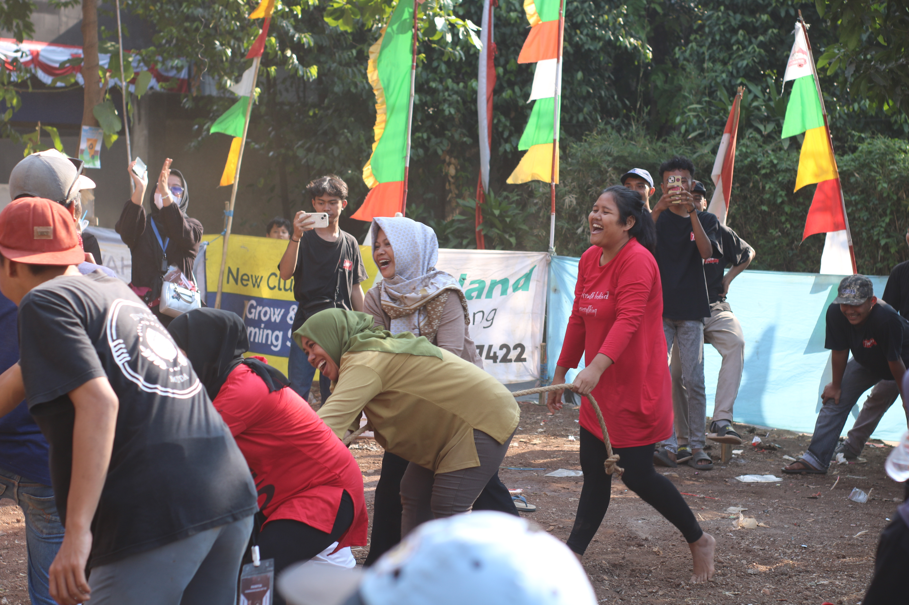
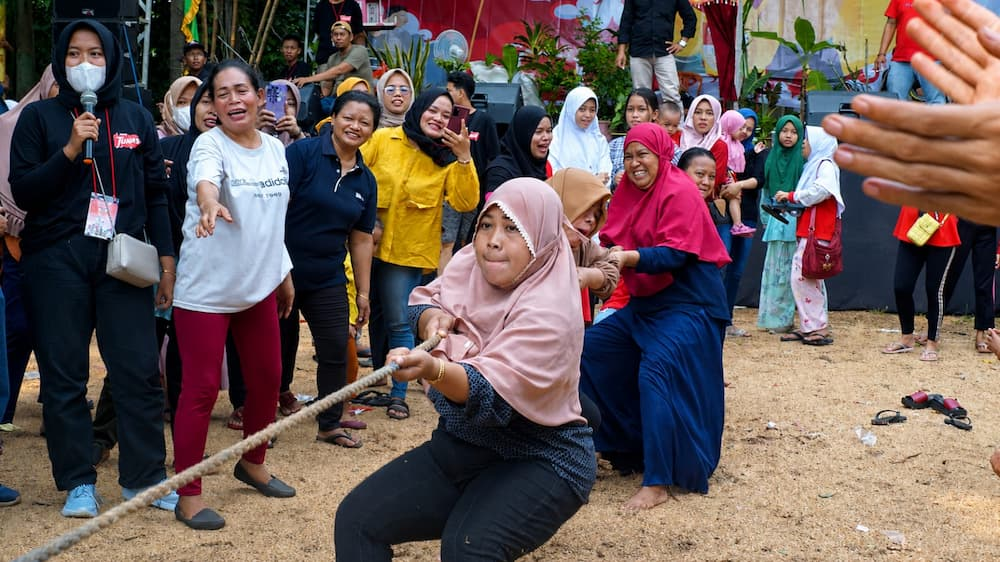
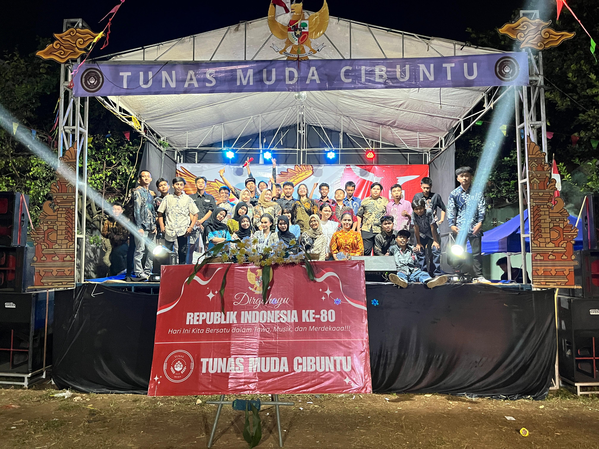

Dokumentasi Kegiatan



Bergerak Bersama, Tumbuh Bersama untuk Masyarakat.

Tunas Muda Cibuntu lahir dari kegelisahan akan pentingnya peran aktif pemuda dalam memajukan lingkungan tempat kita berpijak. Kami percaya bahwa setiap jengkal wilayah Cibuntu memiliki potensi luar biasa jika dikelola dengan semangat kolaborasi yang kuat dan kepedulian yang tulus.
Sebagai wadah yang inklusif, kami tidak hanya bergerak di bidang sosial, tetapi juga menjadi motor penggerak bagi warga untuk bersama-sama mengawal pembangunan desa yang lebih transparan, edukatif, dan mandiri. Fokus utama kami meliputi penguatan ekonomi kreatif lokal, advokasi kesejahteraan masyarakat, hingga pelestarian nilai-nilai adat yang mulai terkikis oleh zaman.
Kami meyakini bahwa perubahan besar tidak datang dari langkah satu orang saja, melainkan dari ribuan langkah kecil yang diambil secara bersama-sama. Melalui semangat Bergerak Bersama, Tumbuh Bersama, Tunas Muda Cibuntu berkomitmen untuk terus berinovasi, menjaga integritas, dan memastikan bahwa setiap suara warga didengar serta setiap potensi pemuda dapat tersalurkan demi masa depan Cibuntu yang lebih gemilang.

